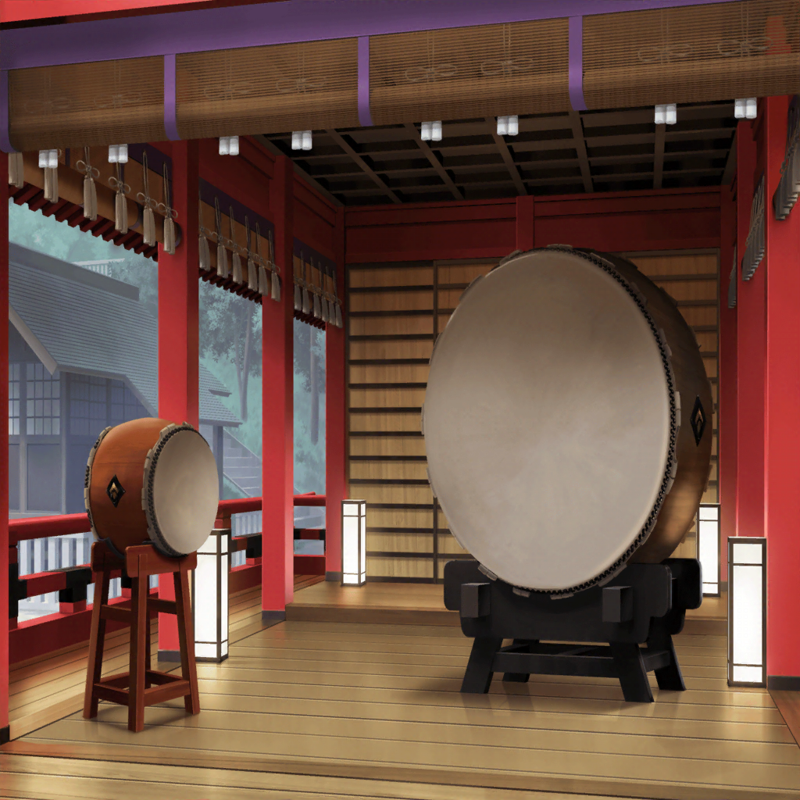

神社 参道
こころ
香澄！ 神社に着いたわよ！
お祭りはどこかしら？ 金魚すくいは？
香澄
あ～、やっぱりどこにも屋台は出てないね～
美咲
はぁ……はぁ……
だから言ったでしょ？ お祭りは週末だって
香澄
やっぱりそっか～。残念だな～。
けど、太鼓の音はするよね？
美咲
お祭りに向けて、練習とかしてるんじゃない？
ね、はい。納得した？
それじゃあ、そろそろ帰るよ
こころ
あたし、それ見てみたいわ！
太鼓を練習しているところ！
香澄は、どうかしら？
香澄
うん！ 私も見たい見たい！
音は奥から聴こえてくるよね？
ちょっと行ってみようよ！
美咲
ホント、好奇心のカタマリなんだから、２人とも……

神社 神楽殿
こころ
見て、美咲！ 香澄！
あそこで太鼓を叩いてるわよ！
わ～、とっても大きな太鼓ね～！
香澄
ホントだ～！
私の身長くらいあるかも！ すっごいね～！
巴
お？ 香澄……？
香澄
あ！ 巴ちゃんだっ！
見て見てこころん！ あそこに巴ちゃんがいるよ！
こころ
ホントだわ！
もしかして巴も、この太鼓の音に誘われて、
ここに来たのかしら！？
美咲
いやいやいや……
あの衣装見なよ。それは絶対違うから
巴
ん？ こころと美咲もいたのか？
どうした、こんなところで？
香澄
えっとね、こころんと美咲ちゃんと一緒に学校帰ってたら、
神社から太鼓の音が聴こえてきて、
お祭りとかやってるかもって思って来てみたんだ！
巴
そっか。けど、悪いな～。
実際のお祭りは週末なんだ。
今日は、和太鼓の練習をしてるだけでさ
香澄
え？ 今の太鼓の音って、巴ちゃんが演奏してたの？
こころ
そうだったのね！ すごいわ！
とっても楽しいリズムだったもの！
あたし、身体が勝手に動いちゃったわ！
巴
ははは、そんな風に言ってもらえると嬉しいな。
あ、そうだ。ちょっと休憩したら、また練習するからさ、
良かったら和太鼓の演奏、見ていくか？
香澄
えっ！？ いいの！？
巴
もちろん！
やっぱり見てくれる人がいてくれたほうが、
演奏してる方も気合いが入るしな
香澄
やったー！
こころん！ 一緒に見ていこう！
こころ
ええ！
美咲も、こっちにいらっしゃいっ！
美咲
あー、はいはい……
ていうか、こうなっちゃったらもう付きあうしかないよね……
香澄
巴ちゃん！ 頑張ってね～っ♪
巴
はは、ありがとな。
それじゃあ、いくぜ！
ソイソイソイソイソイ！ ソイヤっ！
香澄
わぁっ、すっごい気合い入ってるね～！
カッコイイ～っ！
こころ
美咲？ 今、巴はなんて言ってたの？
早口で、よくわからなかったわ
美咲
よくわからないけど、たぶん……ソイヤ……？
こころ
ソイヤ？
美咲、ソイヤってなにかしら？
美咲
なんか気合いを入れるための言葉じゃないの？
あたしもよく知らないけど
こころ
すごいわ！ ソイヤって言うと気合いが入るのね！
あたしも言ってみるわね！
香澄
えぇっ、こころん！ 私もやりたいっ！
それなら一緒に言ってみようよ！
せーのっ！
香澄・こころ
ソイヤーーーーーーっ！
美咲
（はぁ……
この人達のテンションに、全くついていけない……）
演奏後
巴
ふぅ～、汗かいた～！
どうだ？
和太鼓の魅力、ちょっとはわかって――
こころ
巴！ すごい！ すごいわっ！
あたし、とっても感動したわ！
和太鼓の響きって、本当にステキね！
香澄
私も思った！
空気全体が揺れてる感じがして、
ゾクゾク～って鳥肌立っちゃった！
巴
おぉ～っ！ そう！ 和太鼓って、そうなんだよ！
うわっ、ヤッバい！
わかってくれる人がいて、マジで嬉しいんだけど！
巴
Afterglowのみんなは、和太鼓にあんまり興味ないからさ！
今ので、すっげー気合い入った！
お祭りも成功間違いなしだなっ！ ありがとな、２人とも！
こころ
ねぇ、巴！
あたしもお祭りで太鼓を叩いてみたいわ！
香澄
えぇっ！？ 私も私も～！
美咲
絶対、言うと思ったけど、２人ともやめなって。
いきなり素人が参加したって、迷惑かけるだけだから！
すみません宇田川さん、遠慮なく断ってくれていいんで
巴
え？ アタシは全然オッケーだぞ。やっぱ、和太鼓の響きの
素晴らしさがわかる人と一緒にやりたいからな。
それにこういうのは何よりやる気だし
美咲
あ、意外とあっさりオッケーなんだ……
巴
それじゃあ、今日の練習はこれで終わりだから、
明日の練習から参加してくれよな
こころ
わかったわ！
香澄！ 美咲！ 頑張りましょうね！
美咲
えぇ！？ あたしもやるの？
香澄
じゃあ、巴ちゃん！
明日から、よろしくお願いしますっ！
巴
ああ！ こっちこそ、よろしくな！
気合いを入れて、一緒にお祭りを盛り上げようぜ！
香澄・こころ
おーーーーっ！
美咲
なんかあたし……
どんどん深みにハマっていってる気がする……